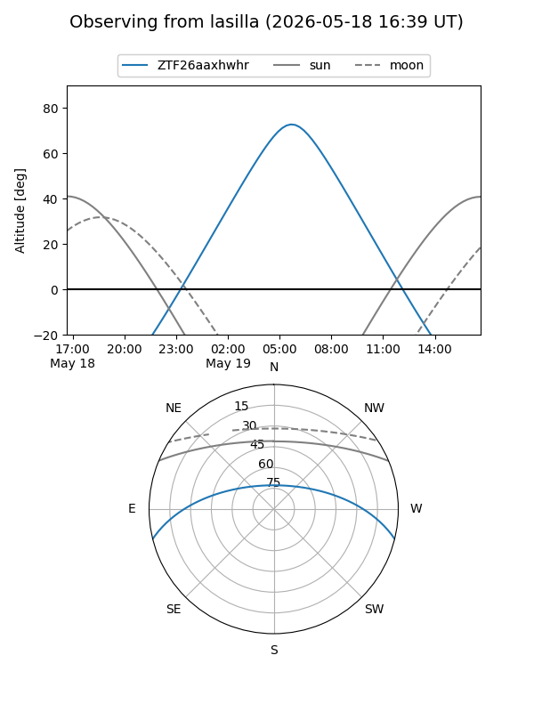
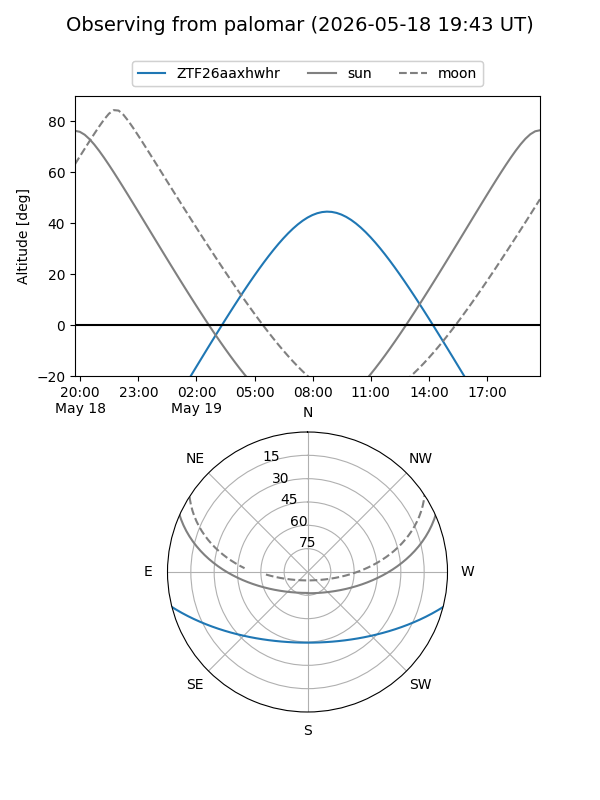

ZTF26aaxhwhr
Target ZTF26aaxhwhr at 2026-05-19 10:57
Aliases and brokers:
FINK: link
Lasair: link
ALeRCE: link
alt names
ZTF26aaxhwhr (ztf,fink_ztf)
Coordinates:
equatorial (ra, dec) = 251.2425,-12.02057
equatorial (HMS+DMS) = 16:44:58.20,-12:01:14.06
galactic (l, b) = (6.2182,+21.18440)
Flags:
Photometry:
last ztfg=15.82, ztfr=15.35
1 ztfg, 1 ztfr detections
Lightcurve
Visibility


Additional plots